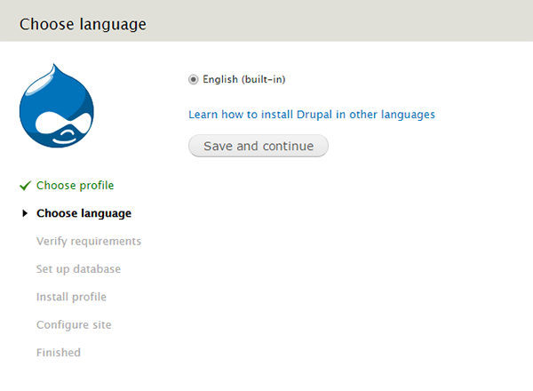
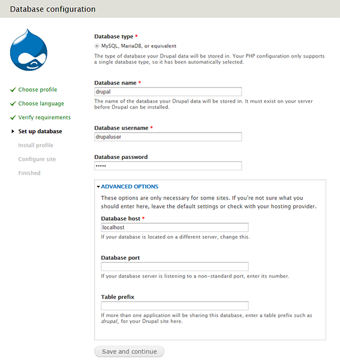
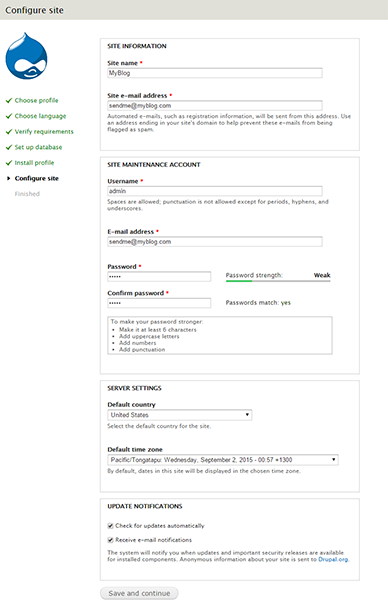
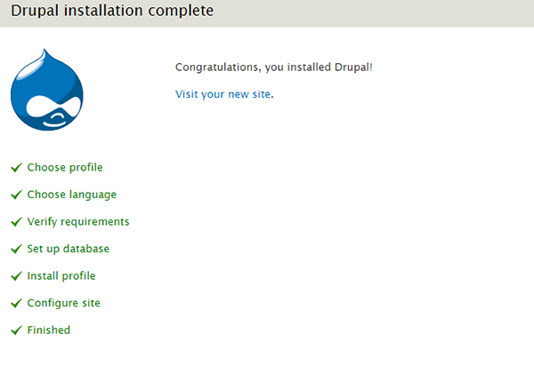
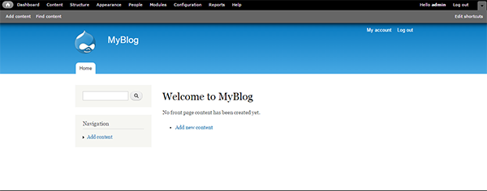

Install and configure Drupal on your LAMP server - Apache, Debian, Drupal, LAMP, Ubuntu
Install and configure Drupal on your LAMP server - Debian, Ubuntu
Drupal is one of the most popular open-source dynamic Content Management System (CMS) for blogs and websites. Drupal is a free software package that allows you to easily organize, manage and publish your content with an endless variety of customization.
Before starting, you will need to install LAMP on your Debian and Ubuntu server. For more details, see Build a LAMP stack (Linux, Apache, MySQL, PHP) - Debian and Build a LAMP stack (Linux, Apache, MySQL, PHP) - Ubuntu.
Set up environment for Drupal
- Install the
php5-gd, libssh2-php and php5-curl as these will be required by Drupal for future purposes.
sudo apt-get update
sudo apt-get install php5-gd php5-curl libssh2-php php5-mysql
- Enable
rewrite mode for human and SEO friendly links.
sudo a2enmod rewrite
- Restart the
apache2 webserver to make the changes effective.
sudo service apache2 restart
- Create a database for Drupal to store basic settings and user data.
mysql -uroot -ppassword
Here, you need to use mysql root password which you provided during mysql installation.
CREATE DATABASE drupal;
- Add a new user for Drupal database.
CREATE USER drupaluser@localhost IDENTIFIED BY 'drupalpassword';
- Grant all privileges to the Drupal user.
GRANT SELECT,INSERT,UPDATE,DELETE,CREATE,DROP,INDEX,ALTER,CREATE TEMPORARY TABLES,LOCK TABLES ON drupal.* TO drupaluser@localhost;
- Reload the MySQL database privileges to activate the new MySQL user.
FLUSH PRIVILEGES;
exit
Set up Drupal
- Download the Drupal stable version from the official site, using the following command:
cd /var/www/html
For Debian.
cd /var/www/
sudo wget http://ftp.drupal.org/files/projects/drupal-7.39.tar.gz
- Extract Drupal compressed file using the following command:
sudo tar zxvf drupal-7.39.tar.gz
- Rename Drupal extracted folder to 'drupal' for easy access:
sudo mv drupal-7.39 drupal
- Change permission to 755 to the Drupal directory:
sudo chmod -R 755 /var/www/html/drupal
For Debian.
sudo chmod -R 755 /var/www/drupal
sudo chown -R www-data:www-data /var/www/html/drupal
For Debian.
sudo chown -R www-data:www-data /var/www/drupal
Install Drupal
- Open the browser and type FQDN or Public IP in browser to start the Drupal installation for your blog: http://public_ip/drupal/install.php.
- Select an installation type as per your requirement:

- Choose the language as per your need.

- Type the database information in the Database configuration page. Under Advanced Options, give the Database host, Database port and Table prefix and then click on Save and continue.

- Configure your blog and website information in the Configuration site page. Type the appropriate information and click on Save and continue

This process may take some time.
- On the Drupal installation complete page, click on Visit your new site to go to your Drupal website:

- You will see a welcome page for Drupal Blog. You can start blogging here.

Conclusion
In this article, you learned to install and configure Drupal on your LAMP server with Debian, Ubuntu.